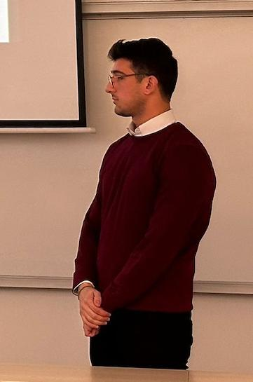

EKF · state estimate
2-DOF Robot Manipulator
Graduation thesis combining computed-torque control, Fuzzy logic, and Extended Kalman Filter state estimation for a nonlinear 2-DOF robot manipulator.

Control & Automation Engineering graduate working at the intersection of machine learning, NLP, retrieval systems, and industrial data. My work spans an XGBoost model for early turnover-risk detection, workforce-allocation workflows, and ongoing RAG and agentic system projects.
Feedback loops, state estimation, and signal processing shape how I build and evaluate NLP, retrieval pipelines, and agent workflows.
I started in Control & Automation Engineering, where I studied feedback loops, state estimation, and signal processing. That background shapes how I approach AI systems: I define what to measure, inspect failure modes, and make system behavior easier to understand.
My graduation thesis, an EKF-Integrated Fuzzy-CTC controller for a 2-DOF robot manipulator, trained me to connect mathematical models with noisy real-world signals. I bring that perspective to retrieval and agent systems by making data flow, state, and evaluation explicit.
I am currently focusing on NLP, RAG, and agentic workflows: connecting language models to tools, memory, and structured data, then testing how the system behaves when retrieval or tool calls fail.
From industrial data flows to applied ML workflows.
Agentic systems, document AI, industrial ML and control. Every project links to code with measured results. Select a project to inspect its work and evidence.
Tools I use to build and evaluate ML, retrieval, and data systems.
Open to AI/ML roles focused on retrieval systems, agent workflows, and applied machine learning.